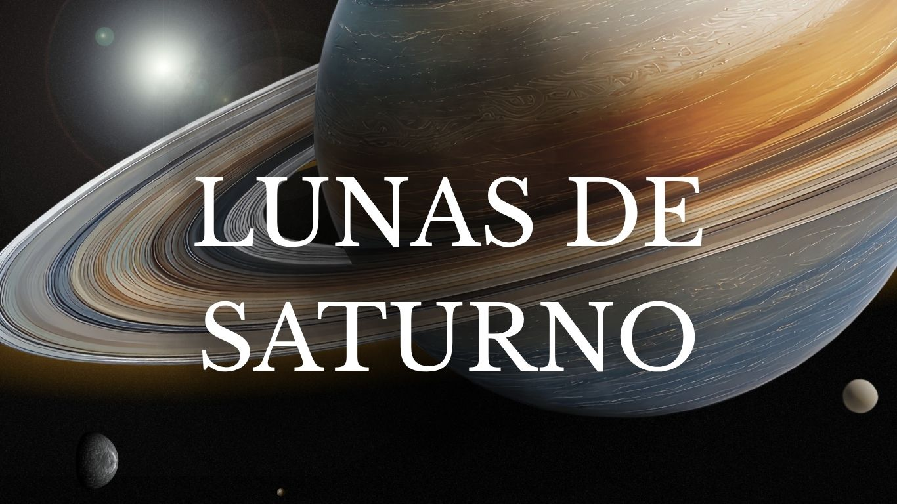

Los sobrevuelos de las sondas Voyager y Pioneer en las décadas de 1970 y 1980 proporcionaron bocetos preliminares de las lunas de Saturno. Pero durante sus muchos años en órbita alrededor de Saturno, la nave espacial Cassini de la NASA descubrió lunas hasta entonces desconocidas, resolvió misterios sobre las ya conocidas, estudió sus interacciones con los anillos y desveló nuevos enigmas, incluido el descubrimiento en una luna oceánica con posibles ingredientes para la vida, que cautivarán a toda una nueva generación de científicos espaciales.i bien las lunas más grandes son esféricas, otras tienen forma de batata (Prometeo), patata común (Pandora), albóndiga (Jano) e incluso esponja (Hiperión). Algunas presentan una forma y textura irregulares y nudosas, como una bola de hielo sucia (Epimeteo). Un objeto observado en los anillos (conocido extraoficialmente como Peggy) podría ser una luna en formación o desintegración, o tal vez ni siquiera sea una luna.
¿Cúantas Lunas tiene Saturno?
PRINCIPALES LUNAS
.png)